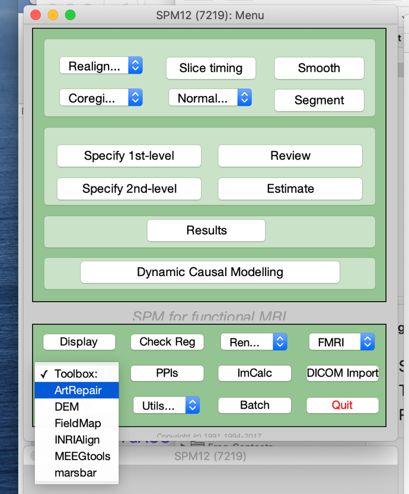
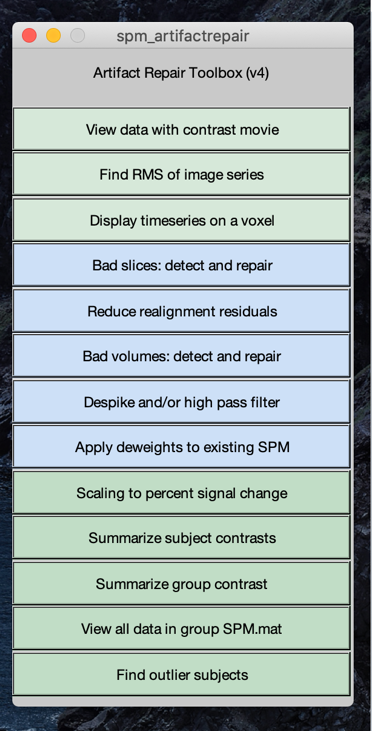
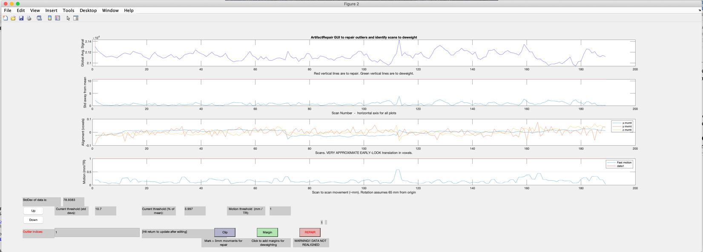

Mind fMRI Image Acquisition and Analyses Course - Cheat Sheet for Art
Repair (a process to find and destroy bad images in your time
series!).
Under toolboxes, select ‘Art Repair’ in SPM.

-

This GUI will emerge, we will be using the ‘Bad volumes, detect and
repair’. Click that button.
Purpose:
To identify bad images due to motion or other MRI artifacts
(i.e., gradient issues, RF spikes).
To replace bad images with interpolated images and then output a
covariate (zeros for all time points except a 1 where the bad images
is). These covariates are used at the first level to address the bad
image (that has been replaced).
Initiate:
After you click on Bad volumes: detect and repair, a dialog box will
populate the bottom left window in the SPM gui. ‘Which global mean to
use? - select Auto. Then it asks whether you have ‘realignment files’ –
click no. Next it asks to input the images to analyze. Go select
‘…AOD_raw/s01/run1/ and then expand s01_aod_run1.nii. Highlight all
images and select. Click done. Now you have the final question, ‘always
repair 1st scan of each session’ Note that you have already
reviewed the first scan of the session during ‘reorientation’ so there
should not be any problems with this image, so normally you can select
‘no’. but it’s fine to also select ‘yes’.
The coded will now review your data.
This screen will pop up.

This will highlight whether there are any bad images. In this case
there are no bad images. If you did see flagged images, then click
‘Repair’ and the code will write out a new volume of images for you
where the bad images have been replaced and new vectors will be
outputted as well that contain the covariate you will include in the
first level model.
After clicking ‘repair’ select ‘interp’ which will provide
interpolated images, replacing the bad images. This will generate a new
nii file ‘vs01_aod_run1.nii’. the ‘v’ (volume repair) represents the new
fixed image file. Also, you will see ‘art_repaired.txt’ (contains image
number that were repaired), ‘art_regressors.txt’ (vectors containing 0s
for all images in time series and a 1 where the repaired image was in
the time series; one regressor per repaired image; these vectors should
be imported into spm first level analyses for this subject;
‘artglobaldataart_repair_example.jpg – copy of the output from art
repair.